.jpg)
Pandora trae lo mejor en diseño y artesanía a su selección de joyas: nuestros dijes , aretes , pulseras , collares , anillos y mucho más están hechos para celebrar y mostrar la confianza, el amor y la pasión de las personas que los usan.
Cómo una marca de joyería danesa diseñó joyas para que mujeres de todo el mundo puedan contar su propia historia a través de su estilo.
| Imagen | Joya | Información | Costo | Tallas |
|---|---|---|---|---|
| 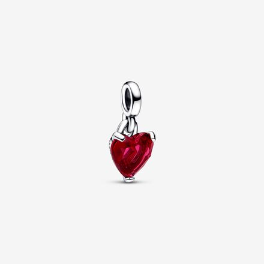 | Charms | Crea tu diseño único con los charms de Pandora que mejor representan tu personalidad. | 25€ - 150€ | Talla única. |
| 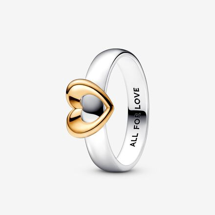 | Anillos | Son el complemento ideal para mejorar cualquier look. Te permiten diseñar combinaciones únicas creadas por y para tí. | 0,30 € - 450€ | 44 - 64 |
| 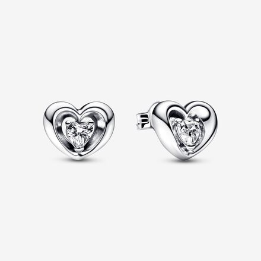 | Pendientes | Tienen un acabado artesanal que hacen de cada uno de sus diseños una joya única. Diseñados para todo tipo de mujeres, perfectos para toda ocasión. | 15€ - 549€ | Talla única. |
| 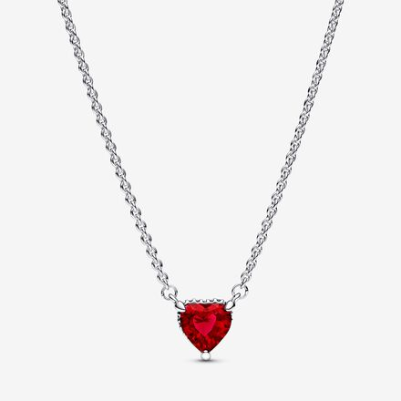 | Collares | Radiante en cada ocasión con los collares y cadenas de plata, doradas o rosadas de nuestra colección. Cadenas ajustables que hablan de ti. Un look que no pasa de moda. | 35€ - 649€ | 40cm - 90cm |
| 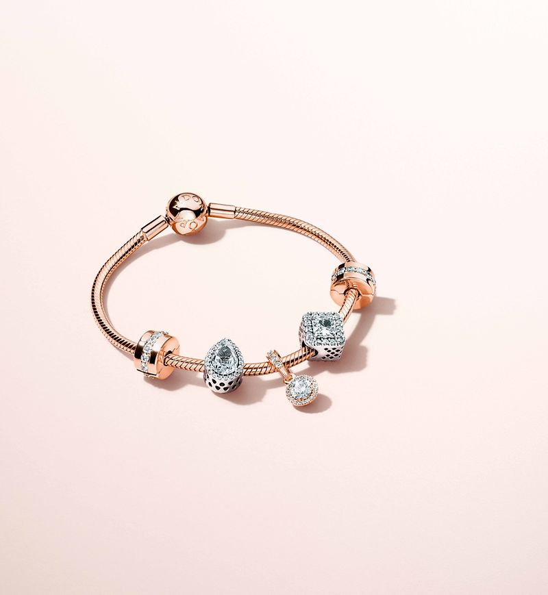 | Pulseras | Te ofrecen la posibilidad de crear el diseño que más se adapte a tu personalidad combinando tus charms favoritos | 49€ - 1,599€ | 15cm - 47cm |
La historia de Pandora es la de una empresa con una marca y unos productos inconfundibles que, en pocos años, ha recorrido el excepcional camino que la ha llevado de ser una joyería local danesa a convertirse en una empresa de joyería líder en el mundo y presente en más de 100 países.
| 1982-2010 | 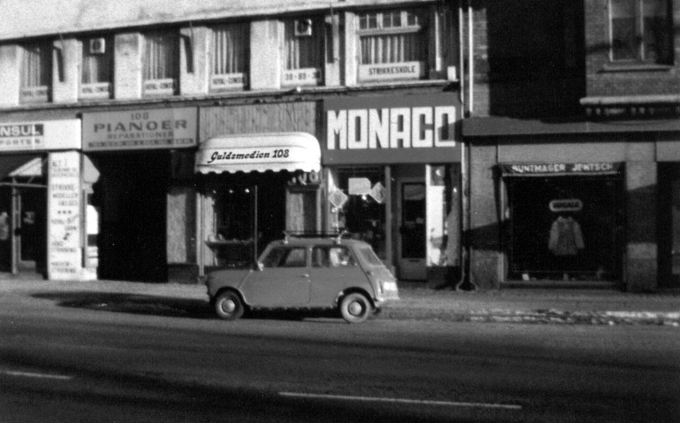 | 1982 | Nuestra historia comienza con el orfebre danés Per Enevoldsen y su esposa Winnie, que fundaron Pandora en Copenhague, Dinamarca, en 1982. Pandora ha realizado un viaje incamible para pasar de ser una joyería danesa local a la marca de joyería más grande del mundo. | ||
|---|---|---|---|---|---|
| 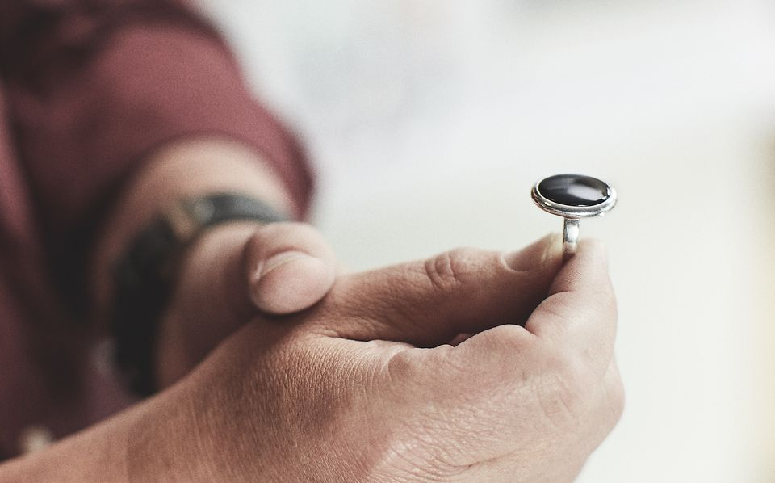 | 1987 - 1989 | En 1987, tras varios años de éxito como mayoristas, se interrumpieron las actividades minoristas y la empresa se trasladó a unas instalaciones más amplias. Mientras tanto, el primer diseñador interno se unió a la empresa y Pandora empezó a centrarse en la creación de sus propias joyas exclusivas. En 1989, la empresa decidió empezar a fabricar sus joyas en Tailandia. | |||
| 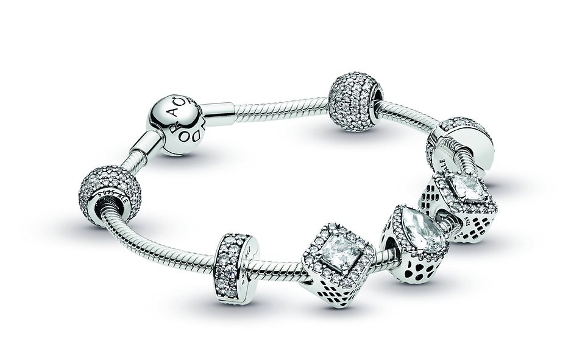 | 2000 | Se presenta el concepto de pulsera de charms de la firma Pandora que permite a las mujeres crear su propio estilo de joyas, asi como expresar hitos y momentos importantes de sus vidas. | |||
| 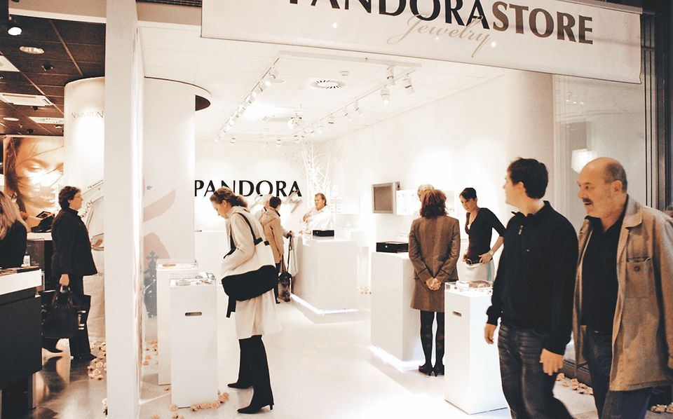 | 2005-2006 | En el 2005 se inauguran las primeras instalaciones de producción propias en su totalidad de Pandora en Gemopolis, Tailandia. Y en el 2006 se inaugura la primera Concept Store de Pandora en Hamburgo, Alemania. Desde entonces, otras 2700 han abierto sus puertas por todo el mundo. | |||
| 2010-2020 | 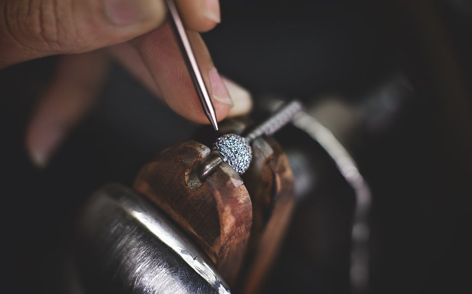 | 2010-2013 | En 2010, Pandora cotiza en la bolsa de valores NASDAQ OMX en Copenhague, Dinamarca. 2013, se presenta la Colección Essence de Pandora. El concepto comunica valores interiores a través de bellos charms terminados a mano. La Colección Essence de Pandora se descatalogó en 2019. | ||
| 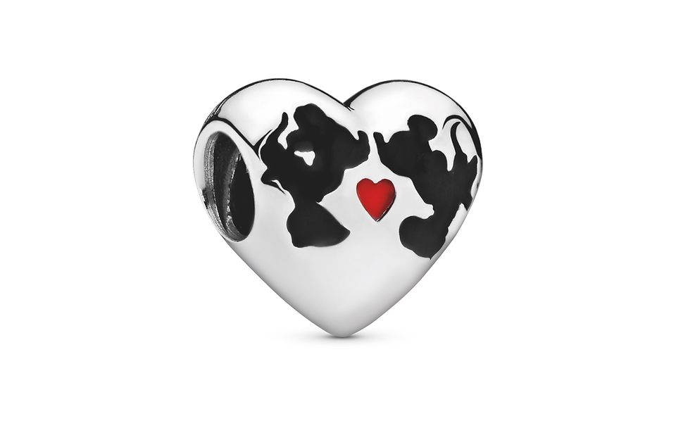 | 2014-2016 | 2014, Pandora lanza la primera colección de Disney x Pandora, una de las numerosas colaboraciones con Disney. En el 2016 se presenta nuestra aleación única de metales con un recubrimiento de oro rosa de segunda ley de 14k. | |||
| 2017 - 2018 | Inauguración de nuestras instalaciones de producción vanguardistas, eficientes en cuanto a los recursos certificadas conforme a LEED (Liderazgo en Energía y Diseño Medioambiental) de nivel Gold en Lamphun, Tailandia, en 2017. Mientras que en 2018 se presenta nuestra aleación única de metales con un recubrimiento de oro de segunda ley de 14k junto con Pandora Reflexions, una nueva colección de charms de clip planos, pulseras y collares tipo 'choker' diseñados para una expresión personal ilimitada. | ||||
| 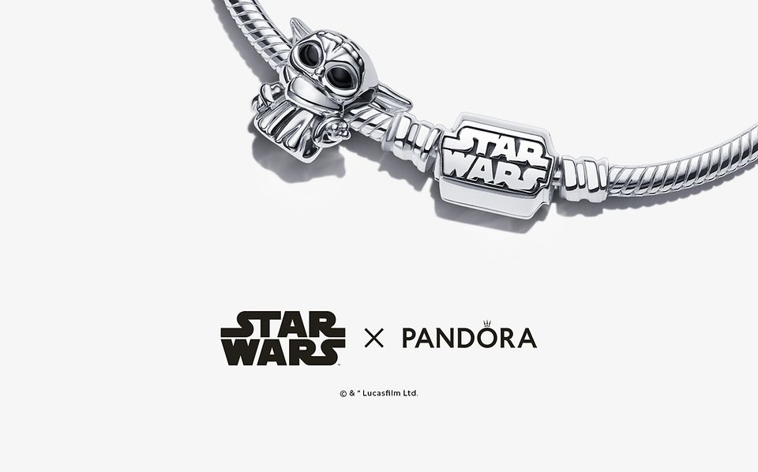 | 2019 - 2020 |
Primero presentamos Pandora ME en 2019, una nueva gama de joyas, con
milenials como imagen de la campaña, demostrando su popularidad
entre los millenials y más. También anunciamos y presentamos nuestra
mágica colección de Harry Potter, el inicio de una nueva asociación
con Warner Bros. Produçtos de consumo. En 2019, también presentamos
nuestra asociación con UNICEF para recaudar fondos para apoyar a los
más jóvenes de todo el mundo.
2020: La colección Star Wars™ x Pandora se lanza en colaboración con Lucasfilm, inspirada en personajes y símbolos de la querida saga. |
|||